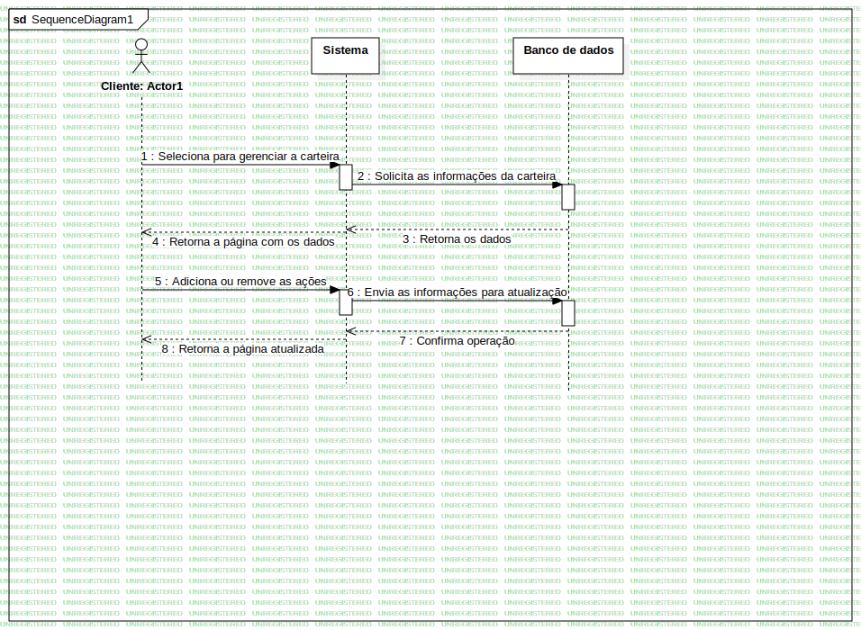

Interaction1
UMLInteraction
SoyStock
::
DiagramaDeSequencia
::
Gerenciar Carteira de ação
::
Interaction1
Description
none
Diagrams

SequenceDiagram1
Participants
Cliente: Actor1
Sistema
Banco de dados
Messages
Seleciona para gerenciar a carteira (Cliente→Sistema)
Solicita as informações da carteira (Sistema→Banco de dados)
Retorna os dados (Banco de dados→Sistema)
Retorna a página com os dados (Sistema→Cliente)
Adiciona ou remove as ações (Cliente→Sistema)
Envia as informações para atualização (Sistema→Banco de dados)
Confirma operação (Banco de dados→Sistema)
Retorna a página atualizada (Sistema→Cliente)
Properties
Name
Value
name
Interaction1
stereotype
null
visibility
public
isReentrant
true
Owned Elements
SequenceDiagram1